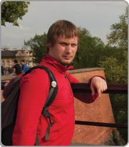

Yury Chajkou
About me
- born 24.02.1982.
- Finished high school at 1999.
- 1999-2004 studied at the BSU on the
biological faculty (biochemistry).
- 2005-2006 worked as a system administrator
in the "Na Strage" newspaper.
- 2006-2008 - technical editor and designer
in the "Na Strage" newspaper
- 2008-2009 - design-studio Mastak: graphic design, page-proofs, sites design.
-
2009 - 2020 - environmental engineer in the UP "Techproektnaladka".
- 2020 - now WP developer in the SMART APPS
My aims:
- Gеt knowledge about the front-end development,
which can be used in professional activities.
- Get a demanded actual speciality.
- Upgrade my soft skills, such as writing of summaries,
passage of interview, etc.
- Upgrade English skills.
Skills:
- English level
- Key skills
- PHP
- CSS
- HTML
- Bootstrap 4
- Wordpress
- ACF
- Wordpress
- Basic SEO optimization
- Adobe Photoshop & Illustrator
- Soft-skills
- Hardworking
- Ready to hard full day learning
- Wide experience in natural sciences and engineering works